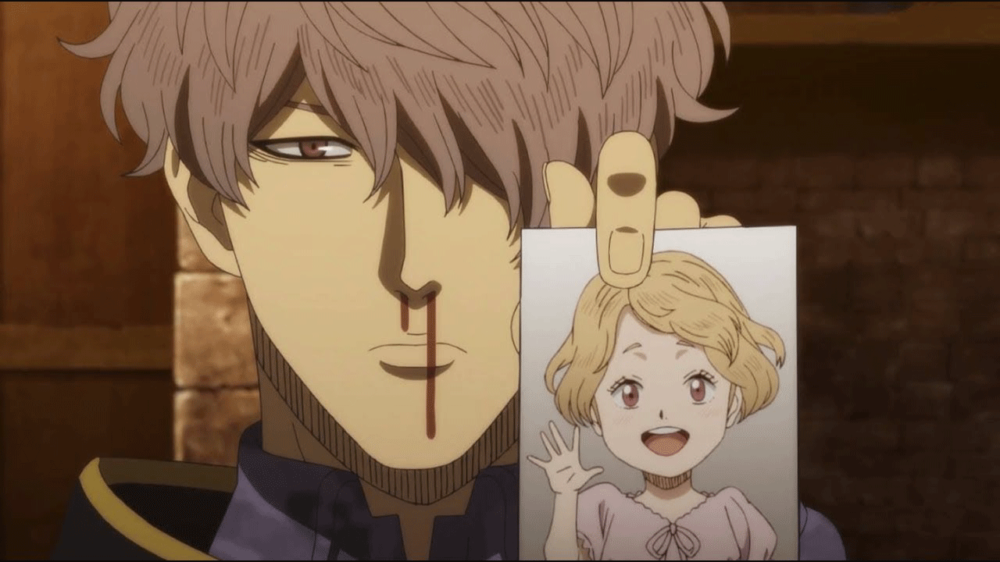

Black Clover
Cuando la humanidad estaba a punto de caer por un demonio antiguo, un solo mago lo derrotó y la
salvó. Más tarde, el mago se convirtió en una leyenda y se le conoció como Rey mago. Tras ello,
el Reino del Trébol gozó de paz a través de generaciones de reyes magos y nueve órdenes mágicas
subordinadas.
Asta y Yuno son huérfanos que se criaron juntos desde que nacieron después de ser abandonados en
un orfanato de la iglesia de Hage, ubicada en la zona olvidada del Reino del Trébol al mismo
tiempo. En un mundo donde todos tienen poder mágico, Asta es el único que ha nacido sin magia,
lo que lo lleva a entrenar físicamente como compensación. Por el contrario, Yuno nació como un
prodigio con un inmenso poder mágico y el talento para controlarlo.

-
1
Asta
Asta aparece por primera vez en Black Clover como un pequeño huérfano en la iglesia de Hage con Yuno. Nació sin magia en el Reino del Trébol, donde todos sus ciudadanos son magos. A pesar de esta discapacidad, aspira a convertirse en el Rey Mago para acabar con la discriminación en el país. Después de salvar a Yuno de un ladrón cuando eran niños, los dos chicos se comprometen a ser rivales para convertirse en el Rey Mago. En la ceremonia anual de grimorios para jóvenes de quince años del reino, Asta no es elegido por un grimorio. Cuando Yuno es atacado por el ladrón Revchi por su grimorio del trébol de cuatro hojas, Asta intenta detenerlo pero es golpeado y se entera de que no tiene magia. Casi desesperado, ser reonocido por parte de Yuno como su rival, le da la motivación para seguir luchando.
-
2
Nero
Como humana, Secre es una mujer esbelta con cabello de color azul oscuro en un estilo bob. Dos
cuernos sobresalen de su cabello a cada lado de su cabeza, y dos mechones de cabello sobresalen
de la parte superior de su cabeza. Ella tiene bolsas oscuras bajo los ojos. Lleva un vestido de
color oscuro con tirantes finos y una falda corta con volantes que parece plumas.
Como anti-pájaro, Nero es un pájaro muy pequeño con un par de alas elegantes, un par de colas
que forman una flecha en la punta y un pico negro. Una de sus características notables es sus
ojos rasgados que le dan a Nero un aura hostil.
-
3
Yami
Yami es un hombre alto y de constitución musculosa. Tiene los ojos negros al igual que su
cabello, el cual es de longitud media y está desordenadamente peinado hacia atrás. Además, tiene
un bigote y una barba incipientes.
El atuendo de Yami es muy simple y consiste solo en una remera blanca y pantalones negros. Los
pantalones tienen una capa extra de cuero marrón que cubre sus muslos exteriores hasta las
rodillas. Los pantalones se sostienen con un cinturón alrededor de su cintura. Yami lleva otro
par de cinturones, uno de los cuales usa para llevar su grimorio. Por último, calza botas altas
negras que cubren la mayor parte de sus pantorrillas.
Como capitán del escuadrón Toro Negro, Yami lleva una capa negra con su insignia en ella. La usa
sobre su hombro derecho y está sujeto por dos cuerdas a su hombro izquierdo.
-
4
Yuno
Yuno es un chico joven de estatura media con complexión delgada, ojos color ámbar y cabello negro
desordenado. Su conjunto principal consiste en una camisa negra con cuello alto y manga larga.
Las mangas tienen cuero marrón que cubre las muñecas y la parte superior de los brazos. Viste
pantalones marrones claros que se cortan debajo de las rodillas y, alrededor de su cintura, un
par de cinturones marrones que se cruzan. Además, usa un par de calcetines de color oscuro y un
par de botas. Lleva su grimorio en una bolsa atada a la derecha de su cintura.
También posee un collar hecho de una cadena de color dorado y una piedra azul, que tiene una
cruz de color dorado y estrellas de cuatro puntas en cada esquina.
-
5
Noelle
Noelle es una chica de 17 años con una constitución delgada pero curvilínea y ojos rosados. Su
cabello de color plateado, tiene dos coletas y flequillos en la frente. Además, ella lleva un
par de aretes de color púrpura con una forma cruzada de "fitchy" y una pulsera de plata en su
muñeca izquierda.
Lleva un vestido corto sin mangas, morado y sin espalda, cubierto por una chaqueta de color
plateado. La chaqueta tiene un diseño sin espalda con mangas unidas en la parte posterior que se
extiende un poco más allá de sus codos con puños de color dorado. El blazer también tiene un par
de pins de la Casa Silva pegados a ella alrededor del área de su clavícula. Además, tiene bordes
con volantes y un abrigo redondo que se extiende hasta las rodillas.
-
6
Vanessa Enoteca
Vanessa es una joven alta con cabello rosado ondulado hasta la mitad de la espalda que mantiene
suelto con un peinado lobulado con flequillo hacia el lado izquierdo, ojos morados, labios
carnosos y un cuerpo voluptuoso.
Cuando está en el interior, prefiere vestirse solo con su ropa interior, que consiste en un par
de lencería roja de tirantes finos con diseños de volantes y, por lo general, usa su bata de
escuadrón encima de este atuendo.
Cuando está en público, Vanessa cubre la mayor parte de su cuerpo, aunque el atuendo en sí sigue
siendo muy revelador. Viste una blusa sin mangas, ajustada, de color rojo violeta y una
minifalda con guantes de noche rojo violeta.
-
7
Julius Nova Chrono
El Rey Mago es una persona a la que le gusta escaparse del palacio adoptando la forma de simples
ciudadanos en busca de nuevos tipos de magia y curiosidades por el reino. Como se mencionó
anteriormente, puede llegar a ser una persona muy curiosa en el tema de la magia, se emociona
mucho cuando encuentra una magia que el no a visto antes dándole un toque algo infantil , como
se dio en el caso de Yuno, Asta y Yami.
Julius también es una persona que considera innecesario las diferencias sociales y
discriminaciones creyendo firmemente en que todas las personas , ya sean plebeyos , nobles , con
mucho o poco poder mágico tienen las mismas posibilidades de vivir y ser caballeros mágicos.
-
8
Finral Roulacase
Finral nace como el hijo primogénito de la familia Vaude años antes que su hermanastro, Langris.
Años después de su nacimiento o meses, se desconoce con exactitud en qué momento fue, su madre
biológica, perteneciente a la familia Roulacase, fallece y deja viudo a su esposo y huérfano de
madre a su hijo. Tiempo después, el padre de Finral vuelve a casarse y tiene un hijo, Langris
Vaude, el futuro vicecapitán de Amanecer Dorado.
Desde que su hermano nació, Finral se vio sometido a una gran serie de comentarios despectivos
relacionados con su magia inofensiva en vez de ofensiva por parte de su padre y madrastra,
puesto que la familia Vaude es conocida en el Reino del Trébol por una magia poderosa y dañina.

-
9
Gauche Adlai
Gauche es un hombre serio, poco sociable, desconfiado, antipático y hasta maleducado con otras
personas. Egoísta e individualista, se preocupa solo por sí mismo y su hermana pequeña, Marie,
por la que siente una enfermiza obsesión. Según Gauche, Marie es un ángel cuyo amor y belleza le
han salvado y hace todo lo posible para hacerla feliz. Por el contrario, todo aquel que le haga
daño merece la muerte.
Aunque Gauche no tenga más intereses que su hermana ha ido desarrollando lazos afectivos con el
resto de su escuadrón, hasta el punto de que, cuando su cuerpo es poseído por un elfo, Gauche
lucha con él para que evitar que le haga daño a sus compañeros Gordon, Grey y Henry.

-
10
Zora Ideale
Se demuestra que Zora es muy irrespetuoso con todo tipo de personas con las que tropieza. Nobles,
el Rey Mago e incluso sus compañeros de equipo en el Torneo de Destrucción del Cristal. Él es
capaz de mentir acerca de quién es él, denigrar a otros e insultarlos por sus errores con toda
prepotencia, causándoles una terrible frustración. Rhya a confesado que detrás de lo que dice,
pese a que no lo admita en alto, oculta una gran preocupación hacia los demás y es incapaz de
dejar morir a sus compañeros.
Una de sus principales características es la
imprevisibilidad que tiene. En la víspera del encuentro, comienza a dormir y deja a sus
compañeros de equipo para defenderse de los ataques del equipo contrario, solo para revelar de
pronto que ha pasado la noche anterior colocando sus trampas mágicas como una ventaja, y que
realmente no estaba mintiendo.

-
11
Gordon Agrippa
Gordon es un hombre delgado y joven con la piel pálida y el pelo corto y negro que está peinado
hacia atrás. Usa una sombra de ojos negra en círculos grandes alrededor de sus ojos rojos.
También usa lápiz labial negro y esmalte de uñas.
Su atuendo consiste en una chaqueta gris oscuro con ribete rojo y puños rojos. Sus pantalones
son de un gris a juego y están metidos en botas negras hasta la rodilla. Él usa un cinturón
negro sobre su chaqueta y una bolsa negra para su grimorio cuelga de su cadera izquierda. Sobre
esto viste la túnica del Toro Negro. Su gorra de color gris oscuro tiene una banda negra, un
pico y la insignia del Toro Negro.
-
12
Luck Voltia
Es un adolescente de baja estatura con ojos azules y cabello rubio desordenado de longitud media.
Su cabello es lo suficientemente largo para cubrir sus orejas y su frente.
Su atuendo es muy simple. Consiste en una túnica azul marino con mangas largas que se expande en
circunferencias más grandes cuando llega a sus manos. La longitud de la túnica se extiende justo
debajo de su cintura y parece ser un tamaño más grande para Luck. Sus pantalones son de color
verde azulado y se extienden justo debajo de sus rodillas. Además, tiene franjas de colores
claros con patrones en cruz, como puntos a los lados que van desde la parte superior a la
inferior.
-
13
Magna Swing
Al principio parecía una persona arrogante y engreída, que no quería aceptar a Asta en su equipo
y lo retó en un duelo. Después de que Asta le ganó se mostró muy simpático y alegre con él, y
reconoció que es muy bueno, regalándole la capa de Toro Negro.
También se ha demostrado que tiene un mal genio ,como cuando atacó a uno de sus compañeros por
tomar su pudín y es fácil de provocar. Es muy respetuoso con su capitán Yami demostrándolo al
inclinar la cabeza cuando el capitán regresó.
-
14
Nacht
En el pasado, Nacht era alguien grosero y usaba la magia para su propio beneficio, siendo un
vándalo causando estragos en el Reino , siendo completamente opuesto a su hermano Morgen quien
era una persona muy benevolente y era amado por la gente. No le interesaba unirse a una orden de
caballeros mágicos porque pensaba que no era divertido. También era arrogante ya que creía que
podía ser capaz de hacer un pacto con el demonio de alto rango Lucifugus. Sin embargo, la muerte
de su hermano Morgen le generó un cambio radical en su personalidad, llegando a odiarse a sí
mismo.
Nacht es una persona pragmática y lógica.
-
15
Charmy Pappitson
A pesar de tener 19 años, Charmy es una joven de estatura demasiado baja y constantemente es
confundida por una niña debido a eso. Su cabello es de color negro y lo lleva recogido en un
rodete donde deja unos cuantos cabellos levantados y otros dos mechones un poco más largo que
caen al costado de su cara. Sus ojos son de un peculiar tono verde esmeralda. Entre sus rasgos
faciales, lo que más destaca son sus delgadas cejas y su frente ancha, además, en sus mejillas
se puede notar un constante sonrojo que muestra mucho más su apariencia como niña. Aunque ella
tenga apariencia de niña y mucha gente se lo diga, considera que tiene un alto atractivo sexual.
Su vestimenta consiste sólo en una sudadera o buzo de color claro y pantalones de color oscuro.
-
16
Grey
Grey es una mujer de estatura media. Tiene el pelo azul claro. Ella usa una camisa blanca sin
mangas y un par de pantalones azules, de cintura alta que se ajustan justo debajo de sus
rodillas. Los pantalones tienen cinco flores conectadas en la cintura, siendo la flor del medio
la más grande y las del lado que se hacen más pequeñas. También hay tres botones en forma de
flor verticalmente arriba de la flor del medio. Además, luce un cinturón marrón, conectado a una
bolsa, en el que lleva su grimorio, en su lado izquierdo. Ella también usa un par de zapatillas
azul oscuro con flores en la correa, similares a las de sus pantalones.
Como miembro del escuadrón Toro Negro, tienesu bata que afirma que es del escuadrón. La túnica
con capucha es corta con la insignia de Toro Negro en el lado izquierdo.
-
17
Henry Legolant
Henry es un joven pálido, esbelto y bastante alto, superando la altura de Yami con facilidad.
Tiene el cabello azul claro, largo y desordenado, que este mismo es el hogar de varias aves.
Pocas veces se le ven los ojos debido a la longuitud de su pelo, pero cuando se pude, se ve que
son pequeños y de un claro color dorado.
Siempre se le ve con un conjunto simple y blanco cuya apariencia recuerda a un pijama. También
suele llevar el manto de su escuadrón, los Toros Negros, sobre los hombros.
Henry es un hombre compasivo que aprecia mucho a sus camaradas. Parece tener un profundo sentido
del honor.

-
18
Licita
Licita fue forzada a vivir en las afueras de la aldea debido a su extraña condición que le hacía
drenar la magia y fuerza vital de los demás. (esta extraña condición se ve presente en Henry,
miembro de los Black Bulls). Al cumplir los 15 años de edad recibe el Grimorio del Trébol de
Cinco Hojas de Licht, y años después encuentra un demonio muy cansado y herido en el bosque.
Lleva a este demonio a su casa y cuida de él, adoptándolo como su hijo y nombrándolo Liebe. El
par vive sin preocupaciones y tienen una vida divertida juntos, hasta que Lucifero descubre que
hay un demonio viviendo en el mundo físico e intenta apoderarse del cuerpo de Liebe.
-
19
Liebe
El demonio es una figura negra y alta con un par de alas de murciélago, un par de cuernos, una
cola delgada y larga, y dientes afilados. Sus dedos son garras y su cabello es ondulado.
Durante el Ritual Demoníaco, Liebe toma una apariencia muy similar a la de Asta, teniendo un
pelo puntiagudo de color blanco. Al ser un demonio posee unos cuernos que sobresalen desde su
cabeza, tiene ojos de color negro con la iris roja y la pupila negra, estos están atravesado por
marcas negras que van desde las mejillas hasta la frente y una marca que va desde su cuello
hasta su vestimenta.

-
20